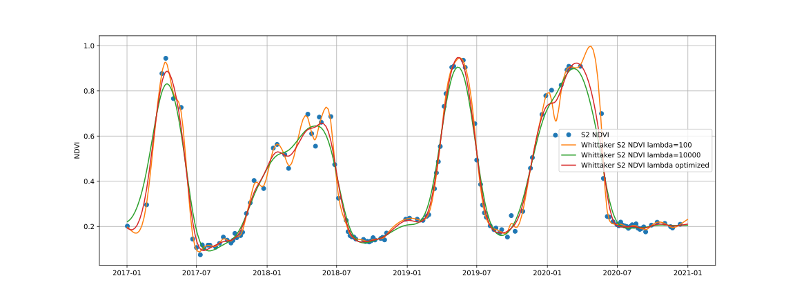

API¶
This section contains the API reference, generated from the current state of the source code.
fusets¶
Timeseries smoothing & integration¶
Library for multi temporal, multi sensor earth observation data integration and analysis.
- class fusets.WhittakerTransformer[source]¶
Bases:
BaseEstimatorA transformer that applies whittaker smoothing to an irregular timeseries.
- fit_transform(X, y=None, **fit_params)[source]¶
Whittaker represents a computationally efficient reconstruction method for smoothing and gap-filling of time series. The main function takes as input two vectors of the same length: the y time series data (e.g. NDVI) and the corresponding temporal vector (date format) x, comprised between the start and end dates of a satellite image collection. Missing or null values as well as the cloud-masked values (i.e. NaN), are handled by introducing a vector of 0-1 weights w, with wi = 0 for missing observations and wi=1 otherwise. Following, the Whittaker smoother is applied to the time series profiles, computing therefore a daily smoothing interpolation.
Whittaker’s fast processing speed was assessed through an initial performance testing by comparing different time series fitting methods. Average runtime takes 0.0107 seconds to process a single NDVI temporal profile.
The smoother performance can be adjusted by tuning the lambda parameter, which penalizes the time series roughness: the larger lambda the smoother the time series at the cost of the fit to the data getting worse. We found a lambda of 10000 adequate for obtaining more convenient results. A more detailed description of the algorithm can be found in the original work of Eilers 2003.
- Parameters:
array – An input datacube having at least a temporal dimension over which the smoothing will be applied.
smoothing_lambda – The smoothing factor.
time_dimension – The name of the time dimension of this datacube. Only needs to be specified to resolve ambiguities.
prediction_period – The duration specified as ISO-8601, e.g. P5D: 5-daily, P1M: monthly. First date of the time dimension is used as starting point.
Returns: A smoothed datacube
{kind=link}
- fusets.mogpr(array, variables=None, time_dimension='t', prediction_period=None, include_uncertainties=False, include_raw_inputs=False)[source]¶
MOGPR (multi-output gaussian-process regression) integrates various timeseries into a single values. This allows to fill gaps based on other indicators that are correlated with each other.
One example is combining an optical NDVI with a SAR based RVI to compute a gap-filled NDVI.
- Return type:
- Parameters:
array – An input datacube having at least a temporal dimension over which the smoothing will be applied.
variables – The list of variable names that should be included, or None to use all variables
time_dimension – The name of the time dimension of this datacube. Only needs to be specified to resolve ambiguities.
prediction_period – The duration specified as ISO-8601, e.g. P5D: 5-daily, P1M: monthly. Defaults to input dates.
include_uncertainties – Flag indicating if the uncertainties should be added to the output of the mogpr process.
include_raw_inputs – Flag indicating if the raw inputs should be added to the output of the mogpr process.
Returns: A gapfilled datacube.
- fusets.whittaker(array, smoothing_lambda=10000, time_dimension='t', prediction_period=None)[source]¶
Convenience method for whittaker. See
fusets.whittaker.WhittakerTransformer.fit_transform()for more detailed documentation.- Return type:
- Parameters:
array – An input datacube having at least a temporal dimension over which the smoothing will be applied.
smoothing_lambda – The smoothing factor.
time_dimension – The name of the time dimension of this datacube. Only needs to be specified to resolve ambiguities.
prediction_period – The duration specified as ISO-8601, e.g. P5D: 5-daily, P1M: monthly. First date of the time dimension is used as starting point.
Returns: A smoothed datacube
Timeseries analysis¶
- fusets.ccdc.ccdc_change_detection(array)[source]¶
CCDC change detection. This implementation works on generic timeseries, not on raw Landsat data like the original version. Therefore, it assumes clear (cloud/shadow free) observations.
- Param:
array:
- Returns:
the break days
- fusets.ccdc.fit_harmonics_curve(array, num_coefficients=6, time_dimension=None)[source]¶
Fit a timeseries model based on fourier harmonics as proposed by CCDC. This method expects inputs in the [0,10000] range!
- Parameters:
array (
DataArray) – DataArray containing timestamped observations in the range [0,10000]num_coefficients –
time_dimension –
- Returns:
- fusets.peakvalley.peakvalley(array, drop_thr=0.15, rec_r=1.0, slope_thr=-0.007)[source]¶
Algorithm for finding peak-valley patterns in the provided array.
- Return type:
- Parameters:
array – input data array
drop_thr – threshold value for the amplitude of the drop in the input feature
rec_r – threshold value for the amplitude of the recovery, relative to the drop_delta
slope_thr – threshold value for the slope where the peak should start
- Returns:
peak, -1: valley, 0: between peak and valley, np.nan: other}
- Return type:
data array with different values {1
Base classes¶
- class fusets.base.BaseEstimator[source]¶
Estimator base class
- fit_transform(X, y=None, **fit_params)[source]¶
Fit to data, then transform it. Fits transformer to X and y with optional parameters fit_params and returns a transformed version of X.
- Parameters:
X – array-like of shape (n_samples, n_features) Input samples.
y – array-like of shape (n_samples,) or (n_samples, n_outputs), default=None Target values (None for unsupervised transformations).
**fit_params – Additional fit parameters.
Returns: Transformed array.
- get_params(deep=True)[source]¶
Get parameters for this estimator.
- Return type:
- Parameters:
deep – If True, will return the parameters for this estimator and contained subobjects that are estimators.
Returns: Parameter names mapped to their values.
- set_params(**params)[source]¶
Set the parameters of this estimator. The method works on simple estimators as well as on nested objects (such as
Pipeline). The latter have parameters of the form<component>__<parameter>so that it’s possible to update each component of a nested object.- Parameters:
**params – Estimator parameters.
Returns: Estimator instance.
fusets.openeo¶
This module contains the openEO variants of FuseTS core algorithms. These algorithms are integrated in openEO by using user defined functions.
- fusets.openeo.cropsar(spatial_extent, temporal_extent, openeo_connection=None)[source]¶
EXPERIMENTAL may be removed in final version Method to compute a predicted, cloud-free, NDVI from Sentinel-2 and Sentinel-1 inputs. Depends on openEO service.
- Parameters:
spatial_extent –
temporal_extent –
openeo_connection –
- Returns:
- fusets.openeo.load_cubes(collections, spatial_extent=None, temporal_extent=None, openeo_connection=None)[source]¶
Create an openEO datacube based on a specification. Multiple collections can be specified and will be merged together into a single cube. The resulting cube will be sampled to the layout of the first collection in the list.
- fusets.openeo.mogpr(datacube)[source]¶
- Parameters:
datacube – input datacube containing the bands to integrate
Returns:
- fusets.openeo.whittaker(datacube, smoothing_lambda)[source]¶
Whittaker represents a computationally efficient reconstruction method for smoothing and gap-filling of time series. The main function takes as input two vectors of the same length: the y time series data (e.g. NDVI) and the corresponding temporal vector (date format) x, comprised between the start and end dates of a satellite image collection. Missing or null values as well as the cloud-masked values (i.e. NaN), are handled by introducing a vector of 0-1 weights w, with wi = 0 for missing observations and wi=1 otherwise. Following, the Whittaker smoother is applied to the time series profiles, computing therefore a daily smoothing interpolation.
Whittaker’s fast processing speed was assessed through an initial performance testing by comparing different time series fitting methods. Average runtime takes 0.0107 seconds to process a single NDVI temporal profile.
The smoother performance can be adjusted by tuning the lambda parameter, which penalizes the time series roughness: the larger lambda the smoother the time series at the cost of the fit to the data getting worse. We found a lambda of 10000 adequate for obtaining more convenient results. A more detailed description of the algorithm can be found in the original work of Eilers 2003.
fusets.openeo.services¶
Builds openEO user defined processes (UDP’s) based on FuseTS functionality.
For each UDP, a json file containing the full process definition can be found in this module. These json files are generated by code that is also part of this module. It is possible to manually write and maintain the jsons, but this is not advisable given the complexity of some process graphs.
For the description of the processes, it is recommended to maintain markdown files that are supported by most editors. When generating the json definitions, the markdown file content needs to be copied (programmatically).
This is a simple example:
import json
from importlib.resources import files
import openeo
from openeo.api.process import Parameter
from openeo.processes import apply_dimension, run_udf
description = files('fusets.openeo.services').joinpath('mogpr.md').read_text(encoding='utf-8')
input_cube = Parameter.raster_cube()
process = apply_dimension(input_cube,process=lambda x:run_udf(x, udf="#mogpr", runtime="Python"),dimension="t")
spec = {
"id": "mogpr",
"summary": "Integrates timeseries in data cube using multi-output gaussian process regression.",
"description": description,
"parameters": [
input_cube.to_dict()
],
"process_graph": process.flat_graph()
}
# write the UDP to a file
with files('fusets.openeo.services').joinpath('mogpr.json').open(mode='w') as f:
json.dump(spec, f, indent=4)